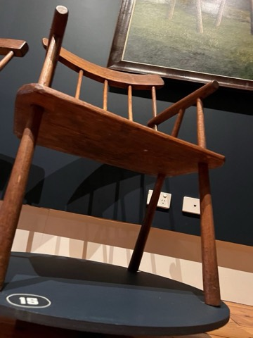
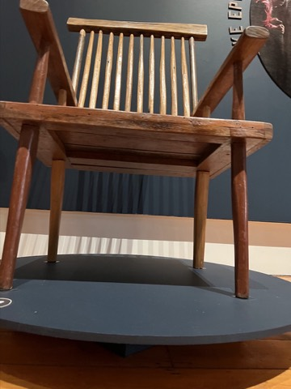
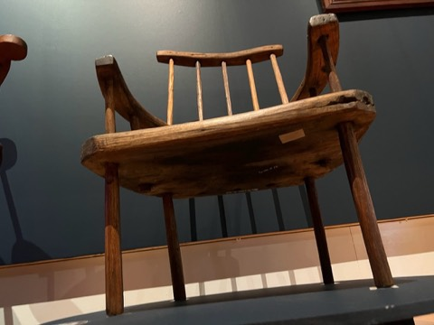
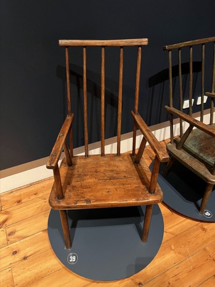
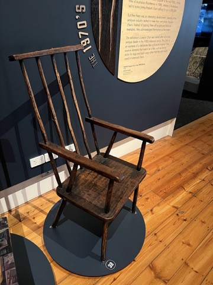

Bench mode: condensed steps only — story, gallery and sources are hidden. Switch to Story for the full guide.
Please Read First
Before You Begin
Jimmy Possum chairmaking is a living folk tradition in Tasmania. I do not have any firsthand training or insights from the families who have passed this form down through the generations. This guide describes how I teach the JP chair in the United States — the opposite side of the world from where the living tradition continues today. There are many ways to make any chair, and I plan to add other JP chairmaking methods in future iterations of this site.
I also used an AI agent in the creation of this website — though that's not to say the words and processes aren't my own. AI helped flesh out some of my shorthand into full sentences, which I then edited. It helped me build the website, which I then edited. And it generated some of the crude drawings from my descriptions, which we then iterated together into something accurate and educational.
The Story
A Chair from the Backwoods
This guide will teach you to build a Jimmy Possum chair — a folk armchair born in the bush of northern Tasmania in the late nineteenth century. You will start with a log, not a board: split it with wedges, rive it into parts with a froe — the long-handled lever-blade made for the job — and shave those parts to shape on a horse with a drawknife. The tools are few and old. The wood is green. The result, with luck and patience, is a chair you could hand down for a century.

Who was Jimmy Possum?
Nobody is quite sure. The name belongs both to a kind of chair and to a half-legendary maker who worked the Deloraine district of Tasmania around the turn of the twentieth century. The most careful account we have comes from a 1978 catalogue produced by students at the Tasmanian School of Art, who spent five months tracking down surviving chairs and the stories attached to them. They were frank about how little is certain:
After considerable research, the identity of Jimmy Possum remains an enigma. Although often talked about and referred to, he persists as a shadowy figure; his name, age and background as yet unconfirmed.
“Chairs made by Bush Carpenters in Tasmania,” Tasmanian School of Art, 1978
The legend, such as it is, is the catalogue's to tell. Its informants describe “an old man with a long white beard” living somewhere around Deloraine, Chudleigh, or Mole Creek in the 1890s until about 1910. His dwelling, the story goes, was made of — or joined to — a hollow tree, and it was there he made the chairs — “often painted green or grey” — and sold them for two shillings and sixpence. The catalogue also records other makers of the district copying and adapting the style, which makes it hard not to suspect that “Jimmy Possum” was less one man than a name that gathered up the work of several bush craftsmen working the same district in the same way.
What is not in doubt is the chair. Its defining feature is structural and unmistakable, and the catalogue describes it plainly in an entry for a solid blackwood example:
The legs protrude through the slab seat to support the arms and are secured with wooden wedges.
Tasmanian School of Art catalogue, 1978

An unbroken tradition of the Meander Valley
Decades after that first catalogue, the chairs got the exhibition they deserved. In 2022 the Queen Victoria Museum & Art Gallery in Launceston mounted “Jimmy Possum: An Unbroken Tradition,” bringing together more than fifty of the best examples, spanning the 1870s to the 2010s. (The photographs of antique chairs throughout this guide are mine, taken at that show.) Its wall text frames the tradition better than I can:
The Jimmy Possum chair-making tradition is like no other in the country, as it is bound to a small region of northern Tasmania, where the people of the Meander Valley started and continued the tradition.
Queen Victoria Museum & Art Gallery, “Jimmy Possum: An Unbroken Tradition,” 2022
The exhibition charted the makers who came after Jimmy Possum — an unbroken line, as its title says, of more than 150 years.

Much of what we now know comes from Dr. Mike Epworth, who first encountered the tradition in the 1990s and, with his research partner Bronwyn Harm, has done the most to document it. The exhibition traces the chair through named makers and families of the Meander Valley and around Deloraine and Westbury — the Larcombes (William, George, Roy, Arthur), Michael Cook, the McMahons, the Cubits, the Kings — and back to a man named George Greenhill.
Greenhill (1850–1937), of Westbury, made some of the earliest documented chairs in the style at his property, “Egmont.” One of the loveliest objects in the show is his 1886 farm journal, open to a single line:
Wet day, made chair for wife, white sow had eight pigs.
George Greenhill, farm journal, 1886 (QVMAG exhibition)
That entry, the curators believe, records the making of his famous Six-legged Chair — distracted by a new wife and a litter of eight piglets, Greenhill fitted the back rungs to the front of the seat instead of the rear, then added extra legs to make the off-balance chair stand. It is a perfect little portrait of folk furniture: a working man, a rainy day, a mistake cheerfully remedied rather than discarded. That spirit is the one to carry to your own bench.
A folk chair, like the backwoods chairs of Appalachia
It helps to see the Jimmy Possum not as an oddity but as Tasmania's version of something that appears wherever people make their own furniture from the trees around them. In the southern Appalachian mountains of the United States, the same impulse produced the post-and-rung “settin' chair” — a tradition Andrew Glenn documents in his book Backwoods Chairmakers. The parallels are striking. Glenn found that the chair went by many names and resisted a single one:
I heard the chair called a split bottom, common chair, mule ear, settin' chair, ladderback, hickory bottom, woven chair or mountain chair. Or, as one maker put it, “It's simply a chair.”
Andrew D. Glenn, Backwoods Chairmakers (Lost Art Press, 2023)
The Tasmanian researchers had the same trouble naming theirs — “cottage, country, bush, amateur, hand-made, primitive, rustic, kitchen” — and allowed, a little reluctantly, that “primitive” was the term that “most correctly defined the methods and circumstances of their production.” Both traditions describe chairs that are, in the catalogue's words, “essentially one-off pieces, often crudely wrought, generally independent of most traditional designs, and originating in rural rather than urban areas. The maker's approach is unpretentious, the style unsophisticated and any innovations may be the result of circumstance rather than formal training.”
Both traditions also benefit from what Glenn calls a simple trick: a moisture difference between the two parts of a joint. The trick is in which part is wetter. The piece with the hole — the mortise — goes together with a higher moisture content than the tenon. As the chair parts reach moisture equilibrium, the hole shrinks as the tenon swells, creating a tighter joint. (Do it the other way around and you get the opposite result: a wet tenon shrinks away from the hole as it dries, and the joint goes loose.)
And in both places the chair is more than an object. Glenn writes that for some makers the chairs “represent an identity and a way of life,” and that “each chair is both an expression and a representation of the maker.” The Tasmanian bush carpenters left us no such testimony in their own words — only the chairs — but the chairs say much the same thing. When you build yours, you join that line.
What you are about to do
The build runs in a logical arc, and this guide follows it section by section. You will split the log and rive your parts (Section 1); shave them to shape on the shavehorse, learning to read grain direction (Section 2); take each part from rough billet to four-square, taper the legs, octagonalize every stick, and set them aside to dry (Section 2b); lay out the seat (Section 3); then build the chair in your hands — drilling the outer back sticks through seat and arm together, fitting the back sticks, and fitting the legs with a scribed shoulder (Sections 4–5); marking and drilling the arm for each leg (Section 6); fitting the remaining back sticks and the comb (Section 7); bringing every part to its finished shape (Section 8); assembling the chair and leveling it (Section 9); and finally pinning and wedging (Section 10). If you like, you can saddle the seat for comfort (Extras).
This guide teaches one standard way to build the chair, using ideal materials and clean, predictable choices at each step. Where the old chairs did something different, you'll find a Historic JP variation note; where the folk tradition invites you to make do with what you have, you'll find a Folk approach note. Take or leave them as you like. There are many ways to build this chair — this is just one. A companion Workshop Manual condenses all of this to scannable cards for use at the bench.
The Story
The Wood, and How to Read It
A chair is only as good as the log it comes from. The standard build starts with one clear, straight-grained green oak log — the most workable, predictable stock there is — and rives every part from it. Here is what to look for and why.
Why green wood
Freshly felled “green” wood is full of moisture, which makes it easier to split and shape with hand tools. A lot of the cost of lumber comes from the time and labor involved in processing and drying it, so logs are significantly less expensive than lumber on a $/board-foot basis. You also get the chance to use woods that are unique in one way or another — species that aren't commercially available, a tree from a family home, or something rustic with bug holes.
Riving and the radial face
Splitting and shaving green wood is not nostalgia. Riven parts follow the wood's long fibers unbroken, which makes them far stronger and lighter than sawn parts — and far easier to shape by hand. As Jennie Alexander put it, you rive “to easily and readily obtain powerful bundles of long fibers.” Riving works radially: you split the log in half through the pith, then into quarters and finer, each split running pith-to-bark along the rays — so each part comes off the log with a true radial face already on it. (On a big log you'll split well past quarters, and once the pieces get small you'll also split tangentially, along the rings, just to get down to size — more on that in Section 1.)

Reading the grain: radial and tangential
Look at the end of a log and you see growth rings circling the pith, with faint radial lines — the medullary rays — running outward like spokes. These two directions give a part its two kinds of face. A radial face lies along a ray, square to the rings, and its grain reads as straight parallel lines. A tangential face lies across the rings, and its grain reads as nested “cathedral” arches.

For the standard chair, orient the wide faces of the arms and crest radial — the broad 2½″ face of an arm lying on the ray. Radial faces are more stable, move less, and present cleaner grain to the eye. Alexander's instruction for every part is simply to start with the radial face and work from there. The legs and back sticks, being roughly square, end up with a radial face on two sides and tangential on the other two.
Choosing the log
For the standard build, seek clear, straight-grained oak with no knots, twist, or rot in the lengths you need — it is the most predictable to read and the easiest to work. As Glenn notes, “straight-grained material works easier with hand tools.” One good log holds an entire chair.
Reference
Tools, Materials & the Cut List
The whole build at a glance, the tools you'll reach for, and the sizes to rive your parts to. This is the bench-reference layer — the condensed companion to the story and the steps.
The whole build, in order
- Split & rive the log into parts.
- Shave arms and legs to four-square; taper the legs; octagonalize all sticks; set aside to dry.
- Lay out the seat (lines 1½″ in from each edge).
- Drill the outer back sticks through the seat and arm together.
- Tenon & fit the back sticks into the arms.
- Drill & fit the front legs (90°), then the back legs (raked).
- Mark, then drill the arm for each leg; assemble.
- Fit the remaining back sticks; drill and fit the comb.
- Level the legs, set the recline, and pin / wedge as needed.
Tool kit
Core
- Froe
- Mallet / froe club
- Splitting wedges
- Sledgehammer
- Drawknife
- Marking gauge
- T-bevel (bevel gauge)
- Saw
- Bench chisel
- Hand brace & bits
- Dividers
- Split-head hammer
- Steel ruler
- Handplane
- Pencil & half-pencil (a carpenter's pencil planed to half thickness)
- Clamps
- Glue
- 12″ square
Optional
- Card scraper
- Spokeshaves
- Block plane
- Adze
- Inshave / scorp
- Travisher
- Coping saw
- Reamer
- Trenails / dowels
Cut list — drawknife build
| Part | Qty | Green (rough) | Dried & dimensioned |
|---|---|---|---|
| Back sticks | 4+ | 1⅛ × 1⅛ × 30 | 1 1⁄16 × 1 1⁄16 × 30 |
| Legs | 4 | 1⅞ × 1⅞ × 30 | 1¾ × 1¾ × 30 |
| Arms | 2 | 2¾ × 1¼ × 24 | 2½ × 1⅛ × 24 |
| Crest / comb | 1 | 1⅝ × 1¼ × 24 | 1½ × 1⅛ × 24 |
| Seat | 1 | — (use dry) | 16 × 24 × 1½ |
Four or five back sticks is typical; fewer sticks means make them thicker.
The seat is the one part that doesn't come from your log: buy a kiln-dried slab, glue one up from dry boards, or rive and sticker a seat blank a season ahead so it's dry when you need it.
Section 1
Splitting the Log & Riving the Parts
Goal: Straight, long-fibered billets for every part.
Split
- Halve the whole log first — the fresh face reveals hidden knots.
- Buck into ~36″+ lengths; cut out knots.
- Score the end grain pith-to-bark; start a narrow wedge, then a splitting wedge.
- Leap-frog wedges down the log; gluts to widen; roll it to free a pinched back.
- Quarter each half; pare away the juvenile wood at the pith.
- On a big log, keep splitting — eighths, sixteenths, finer. Radial first; switch to tangential once pieces get narrow.
Rive
- Set the billet in the brake. Seat the froe centered in the end grain; strike with the club.
- Lever the handle to open the split; keep equal mass both sides; lever toward the thick side to correct a wander.
- Rive everything oversize (+⅛″). Split arms & crest so the wide face is radial.
This is where a chair begins: not by cutting wood, but by separating it along the lines the tree already grew. Splitting reduces the log to manageable quarters; riving with a froe divides those quarters into the billets from which every part is shaped.
Splitting with sledge and wedge

Start by splitting the whole log in half lengthwise, if you can — a tip from Andy Glenn's build chapter in Backwoods Chairmakers. Beyond halving the stock, the fresh split face does something useful: it reveals any large knots hiding inside, so you can plan around them. With the interior in view, buck the halves into rough part-lengths — about 36″ and up — cutting out knots as you go. Then quarter each half, and pare away the weak, unstable juvenile wood near the pith.
With a big log, quarters are often still too heavy to handle and too fat to rive — so keep going. Split the quarters into eighths, sixteenths, or finer, both so you can actually move the pieces and so they reach a riveable size. These first splits are radial — pith-to-bark, along the rays — which is what gives each part its strong radial face. But once the wedges of wood get narrow, a radial split has little width left to take. At that point switch to splitting tangentially, along a growth ring, to peel a piece down to billet size. You give up the perfectly-radial face on those splits, but it is the only way to break a small wedge down further.
To make a split, follow the procedure Drew Langsner lays out step by step in Country Woodcraft. Begin at the end grain: score a line from the pith out to the bark — if the log already shows a radial check, follow it. Drive a narrow starting wedge into the scored line with the sledge. When the crack begins to open, switch to a standard splitting wedge and drive it until the crack travels along the length. Then comes his technique that makes long logs manageable:
Continue leap-frogging to the end of the log. Use gluts to further open the crack… Gluts must be placed so that they won't intercept interior cross fibers — they will split apart if driven into cross fibers.
Drew Langsner, Country Woodcraft: Then & Now (Lost Art Press, 2020)
In other words: as each wedge frees itself behind the advancing crack, move it ahead of the others, walking the split down the log. Gluts — large wooden wedges — widen the gap behind the steel. If a log splits through on top but stays pinched along the back, Langsner adds, roll it over and drive wedges from the other side. Always try to keep equal mass on either side of the split so it runs straight.
Riving with the froe
Once you have quarters, you switch tools. Splitting opens a log; riving controls a split into a usable part. Langsner's definition is the one to keep in mind — riving is “controlled splitting.” Jennie Alexander draws the distinction by the tools themselves:
Riving is the term we use when employing a different set of tools — the froe, froe club, riving hatchet, cleavers, or hacking knives… For post-and-rung chairmaking, wood is rived into straight, flat planes in the direction of its long fibers.
Jennie Alexander, Make a Chair from a Tree, 3rd ed. (Lost Art Press, 2021)

How to rive
Set your billet in a riving brake — Langsner's “old English woodlands word for any device that holds your material in place while you do something to it.” His favorite is a forked sapling, which “self-binds” when you lever against it. Then, in Alexander's words:
If you are right-handed, hold the handle of the froe in the left hand and the froe club in your right. The froe blade is then centered on the stock. Hold the froe steady and swing the froe club to knock the blade into the end of the billet.
Alexander, Make a Chair from a Tree
With the blade buried, set the club down and use the long froe handle as a lever, twisting and prying to open the split. The single most important habit is Alexander's cardinal rule: riving works best with equal mass on both sides of the froe. When the split starts to wander toward the thinner side, lever the froe handle toward the thicker side to draw it back — Alexander's “tic-tic-tic, and you're back on track.” The tension side of the brake encourages run-out — Langsner's observation — so let the wood guide you and correct early.
Rive everything oversize, remembering the ⅛″ green allowance. Wide stock — the arms and crest — should be split so their broad faces fall on the ray (radial). Rive a few extra of every part; some will reveal flaws, and the spares become practice stock. If you can't get to your rived parts soon, bag them to slow their drying.
Section 2
Shaving the Parts with a Shavehorse & Drawknife
Goal: Read the grain; shave clean, flat faces with the drawknife.
- Sit astride the horse, clamp with your feet, pull the drawknife bevel-down in long strokes.
- Flip the part end-for-end to reach what was hidden under the jaw.
- Shave the way the grain lies — like petting a cat. If it tears or chatters, flip and cut the other way.
- Skew the blade (angle it to the stick) and slice (draw it sideways) for a flatter, easier cut.
- Crisp off the knife — little or no sanding needed.
With a pile of riven billets, you move to the shavehorse — the foot-clamped bench that frees both hands for the drawknife. This is where most of the build's hours are spent, and where the chair's character is shaped, quite literally, by hand.
The shavehorse and the drawknife

A shavehorse holds a part in a pivoting wooden jaw — the “dumbhead” — that grips harder the harder you press the foot treadle. You sit astride it, the work projecting toward you, and pull the drawknife in long, slicing strokes, bevel down. To reach the section that was hidden under the jaw, simply flip the part end-for-end and carry on. The whole approach has a tidy origin story. Jennie Alexander tells how, prevented from using a lathe at a 1978 demonstration, the answer came from a conversation with Joyce Alexander about preparing lathe stock with a drawknife:
“Why not keep on going and shave the entire chair?”
Joyce Alexander to Jennie Alexander, recounted in Make a Chair from a Tree
That question founded a whole school of shaved, green-wood chairmaking — and it is exactly what we do here.
Grain direction: shave the way the grain lies
The drawknife rewards reading the grain. Think of it — as Drew Langsner taught — like petting a cat. The fibers in a part lie a certain way, like fur; shave the way they lie and they smooth down and the blade slices cleanly. Shave against them — the wrong way up the fur — and they lift, catch, and tear out a chunk, and the cat gets upset. The fibers in a riven part rarely run perfectly parallel to the surface, so the lay can switch partway along a part or across a knot. When a cut starts to tear, you've found a spot where you're going against the grain: stop, flip the part end-for-end, and shave from the other direction.
A second technique makes every cut cleaner. Skew the blade — hold it at an angle to the part's length rather than square across it. Alexander explains why it works:
Skewing the drawknife's blade to the workpiece's long fibers reduces the drawknife's angle of attack. It also increases how much blade surface is resting on the workpiece, helping to create a flat surface.
Alexander, Make a Chair from a Tree
Section 2b
Four-Square, Taper, Octagon
Goal: Tapered legs and octagonal sticks, set aside to dry.
Four-square
- Shave the radial face flat & straight; then a second radial face flat, straight, parallel.
- Shave the two tangential faces square to size — a go/no-go gauge should just slide on.
- Work all four faces in rotation; watch for a bell-bottom.
Taper & octagon
- Taper each leg to 1″ at the top, starting 20″ down — keep it four-sided.
- Octagonalize every stick — equal facets, never bell-bottomed.
- Set aside to dry: tenons dry hard; the seat (mortise) can go together a little wetter.
Shaving is not random whittling. Each leg and back stick passes through a disciplined progression — rough billet, to two parallel faces, to a true square — before you taper the legs and finally knock every stick into an octagon. Then it all goes aside to dry.

Shave to four-square
First face, second face
Start with the radial face. Shave it dead flat and straight — Alexander's test is to hold it against a known flat surface and ask whether its long fibers exit only at the ends of the stick and nowhere along its length. If a fiber runs out the side, the face isn't following the grain. Then shave a second radial face flat, straight, and parallel to the first.
Square it
Shave the two tangential faces square to the radial faces, bringing the part down to a true square of the target dimension. A simple go/no-go gauge — a notch cut to size — tells you when each pair of faces is right: the square should just slide through. Work all four faces in rotation rather than finishing one at a time, and watch for what Alexander calls a “bell-bottom” — the common error where the easier-shaving end gets thinner than the rest.
Taper the legs (while still four-sided)
Before octagonalizing, taper the legs. Taper each leg to 1″ at the top, beginning the taper 20″ down from the top — and keep the leg four-sided while you do it. It is faster to judge and execute a taper on a flat-faced stick than on a round one. (Alexander's observation: a dead-straight taper can read as slightly concave, and therefore weak, to the eye; a hair of convexity looks “just right.” Practice on scrap first.)

Octagonalize, then dry
Now turn every stick — legs and back sticks alike — into an octagon by knocking off its four corners. Pencil lines around the squared stick as a guide, then take each corner down in turn, bringing each corner up under the shaving-horse jaw and shaving a little at a time. “Don't go too far on any one corner at first,” Alexander cautions; ultimately, “these facets and the surfaces of the original square will be equal widths.” An octagon of equal facets reads as round to the eye and hand but keeps the crisp, faceted character of hand work.
With the sticks octagonalized, set everything aside to dry. This is the moment the green-wood method pays off — but only if you get the moisture difference the right way around. The tenons must be dry; the seat (the mortised piece) can go together a little wetter. As the seat dries, its holes shrink around the dry tenons and grip them tighter. A tenon fitted wet does the reverse: it shrinks as it dries and the joint loosens. So dry your tenons hard, and never drive a wet tenon into a hole you want to stay tight.
How long is “dry”? For sticks of this size, a few weeks in a dry indoor spot is typically enough. A warm corner near the woodstove — or a simple hot box rigged from a chest and a light bulb — hurries things along. The honest test is a kitchen scale: weigh a part every few days, and when the weight stops dropping, the wood has given up all the moisture it's going to give in that spot.
Section 3
Laying Out the Seat
Goal: A layout that locates every leg and stick hole.
- Seat can be any shape — rectangle is traditional; irregular slabs are fine. Start it dry.
- Scribe a line 1½″ in from every edge.
- A hole's centerpoint = where two layout lines cross at a corner.
- Each hole's angle is sighted along the line parallel to that edge — rake, not splay.
With the sticks drying, turn to the seat. Here is where this chair parts company with the staked chairs in the books: instead of computing compound angles and drilling to a sightline, you scribe a simple grid of layout lines, and those lines will guide every hole and angle as the chair takes shape.

Any shape, traditionally a rectangle
The seat can be almost any shape. A rectangle is traditional, but a gentle arc on one or more sides can be pleasing, and irregular off-cuts and slabs are fair game — the Tasmanian makers used whatever wide stock they had on hand, including, in more than one surviving chair, recycled timber from packing cases. Remember the seat is the one part you start dry; a wide green slab will check as it dries.
The layout lines

Scribe a line 1½″ in from every edge of the seat. These four lines do two jobs at once. First, where two of them cross at a corner is the centerpoint of that corner's hole — the rear corners take the outer back sticks (and later the back legs), the front corners take the front legs. Second — and this is the key to the whole chair — each hole's drilling angle will be read along the layout line that runs parallel to the nearest edge.
Section 4
Drilling the Outer Back Sticks
Goal: Outer-stick holes bored through seat and arm at once.
- Draw a centerline down each arm blank.
- Clamp seat + arms together, arms UNDER the seat, centerlines on the side layout lines.
- Drill the outer back sticks through seat and arm in one pass — rear-corner intersection, 1″ bit.
- Sight the rake along the side line: ~9° (upright) to 17° (reclined).
- Clamp scrap under the exit face to stop blow-out — every through-bore.
Now you bore the first holes — and you bore the seat and the arms at the same time, so the outer back sticks will pass cleanly through both when the chair goes together. This is the Jimmy Possum's version of stack, or “sandwich,” drilling.

Line up the arms under the seat
Draw a centerline down the length of each arm blank. (If the blank is wide enough, you can offset this line to place the stick where you want it in the finished arm.) Clamp the seat and the two arms together, with the arms underneath the seat, so that each arm's centerline lines up with the seat's nearest side layout line. The arms are still overlong at this stage, so their exact fore-and-aft position isn't critical yet — what matters is that left and right line up.
Bore through both
Drill the outer back sticks through the seat and through the arm in one pass. The centerpoint is the rear-corner intersection of your layout lines; use a 1″ bit. Sight the rake angle along the side layout line as you bore. Choose the angle for how the chair will be used — anywhere from about 9° for an upright, dining posture to 17° for a relaxed, reclined one. Because you are drilling both parts together, the hole in the seat and the hole in the arm can never fall out of alignment.
Section 5
Fitting the Back Sticks & the Legs
Goal: Sticks and legs fitted and drilled — the chair in your hands.
Back sticks → arms
- Tenon the tops of the two outer back sticks.
- Stand a stick in its seat hole; mark the arm height (8–10″).
- Round the stick to pass through a scrap-with-1″-holes up to your line; go slow near the bottom.
Front legs — the scribed shoulder
- Drill the front-leg hole 90°, front-corner intersection, 1″+ bit.
- Round the top 10″; tap it in to jam; trace the contact line.
- Scribe a shoulder one seat-thickness down; shape the tenon to it, saw the shoulder, pare to seat.
- Legs are tapered — try each in different holes for the best fit.
Mark the arm
- Push the leg up to touch the arm; sight two layout lines and mark — the crossing is your drill point (90°, ⅞″).
Back legs
- Foot well back (anti-tip) but clear of the back-stick through-tenon; 20–30°; centerpoint 2″–3¾″ from the back-stick hole, along the front-to-back layout line.
- Drill & fit like the front — the shoulder line runs at an angle.
From here the chair grows in your hands. You fit the back sticks into the arms, then fit the front and back legs to the seat with a scribed-shoulder joint — reading each angle off the work itself rather than off a number.
Fit the back sticks to the arms
First, cut tenons on the tops of the two outer back sticks. Use whatever you like to make them — a tenon cutter, a dowel cutter, a drawknife, a saw and chisel, a file, or whatever is at hand.
Now fit those sticks into the arms at the height you want the arms to sit — somewhere between 8″ and 10″ above the seat is typical. Here is a reliable way to do it: stand the stick in its seat hole and mark the height you want the bottom of the arm to land. Drill a couple of 1″ holes in a piece of scrap to stand in for the arm, so we don't bruise the mortise too much in fitting. Round the stick down with a drawknife (a spokeshave works too, but a knife is quicker), working until the stick passes through the scrap up to your line. Redraw the line whenever the shaving erases it. Go patiently near the bottom of the stick so you don't overshoot and end up with the arm too low. You can ream the bottom of the mortise a little bit if it helps your fit. With both outer sticks fitted, the upper geometry of the chair is taking shape.
Fitting the front legs: the scribed shoulder

Drill the front-leg hole first, at 90° to the seat, centered on the front-corner layout intersection, with a 1″-or-larger bit. Then fit the leg:
- Round the upper section of the leg until the top 10″ or so can enter the mortise. Tap it in firmly with a hammer so it jams.
- Trace the leg where it touches the hole — this contact line is the wood telling you how deep it went. Then scribe a second line one seat-thickness DOWN the leg from the contact, toward the foot. That second line becomes the shoulder.
- Remove the leg and shape the tenon from its top down to the shoulder line, taking care not to mar the top line. Saw lightly into the shoulder line — that saw cut becomes the joint's shoulder — then pare with a drawknife or chisel until the leg seats with the shoulder tight against the seat.
- All four legs are tapered, so before you commit, try a leg in different holes — one may seat better than another.
▢ Your photos
Leg-fitting: (a) the leg jammed in the mortise with its contact line traced · (b) the shoulder line scribed one seat-thickness toward the foot · (c) the finished tenon and shoulder, seated.
Mark the arm for the front leg
With the leg fitted to the seat, you locate where it must pass through the arm. Push the leg up through the seat until its top just touches the underside of the arm. If the top lands off the arm's centerline, rotate the leg and see if it improves; if it's still far off, try it in the other front hole. Then sight the position from two directions:
- At eye level, sight the center of the leg-tip down the layout line — lined up with the arm and the stick — and mark that line on the top of the arm.
- Sight down the adjacent layout line — lined up with the front of the seat — and mark the approximate center of the leg-top onto the arm again.
- Where the two marks cross is your drill point. Bore the arm there at 90°, ⅞″ diameter (or whatever thickness you can make a solid tenon at the leg's top).
The back legs

Assemble the leg, arm, and outer back sticks, then hold a back leg up to the chair to choose its angle and location. You are balancing two needs. You want the foot to land well back so the chair can't tip backward — but you don't want the back stick's through-tenon, where it protrudes below the seat, to collide with the back leg. An angle of 20–30° is good. Put the hole's centerpoint 2″–3¾″ from the back-stick hole, along the front-to-back layout line. Where it lands within that zone varies with the angle, the seat thickness, and the leg thickness — so hold the leg up to the chair and verify before you bore.
Drill and fit the back leg the same way as the front, with the round-and-jam, trace, scribe, and pare sequence. The only difference is that the scribed shoulder line will run at an angle rather than square across the leg, because the leg meets the seat at a rake.
Section 6
Drilling the Arm for the Back Leg
Goal: The arm bored for the back leg; the chair assembled.
- Confirm arm height at both intersections (12″ square on the seat).
- Mark the arm for the back leg; trace where the arm crosses the back stick & front leg.
- Remove the arm; rest it on books/shims at those lines; seat the back leg.
- Trace the leg onto the arm; take its angle with a bevel gauge.
- Drill the arm at that angle — confirm the direction first (a reversed hole = a new arm).
The back leg, like the front, must pass through the arm — but at its raked angle. You find that angle the same way you find everything on this chair: by setting up the actual parts and reading it off them.

Mark, then read the angle
First confirm the arm is at its correct height at both intersections, checking with a 12″ square stood flat on the seat. Mark the arm for the back leg the same way you did for the front. Then trace, onto the back stick and the front leg, where the arm crosses them.
Now remove the arm. Stack some books or blocks and shims on the seat and rest the arm on top of them, positioned so that it meets the lines you drew on the back stick and the front leg — this puts the arm exactly where it will live in the finished chair. Seat the back leg. Trace the back leg's shape onto the arm with a half-pencil — a carpenter's pencil planed to half its thickness, a layout trick borrowed from Christopher Schwarz — and take its angle with a bevel gauge. Compare that angle to the angle you actually drilled the back leg at: they may not match exactly, but they should not be wildly off. If they are, something upstream needs a look.
Drill it the right way around
Drill the arm's tenon hole at that bevel angle, on the point you marked along the layout line.
Section 7
The Remaining Back Sticks & the Comb
Goal: All the back sticks in, and the comb fitted.
- Assemble; rotate the outer sticks to the same angle, take it with a bevel — that's the inner-stick angle.
- Space inner sticks: distance between outer centerpoints ÷ (n − 1).
- Drill the inner sticks; nudge points to taste; angle a tenon to forgive an off mortise.
- Drill the comb at an angle; dry-fit and assemble — it pulls strays into line.
With the outer sticks, arms, and legs established, fill in the rest of the back and cap it with the comb. The chair's shape and posture come together here.
Space and drill the inner sticks
Assemble what you have so far. Rotate the two outer back sticks until they sit at roughly the same angle along the layout line, and take that angle with a bevel gauge — that's the angle for the inner sticks (unless you have a “spicy” plan, like a curved crest, in which case you can vary them deliberately). Space the inner sticks evenly (or don't): divide the distance between the centerpoints of the two outer sticks by (n − 1), where n is the total number of back sticks, and you have the spacing.
This is the moment to nudge things for the look you want — move drill points fore, aft, left, or right to accentuate whatever vibe you're after, and try sticks in different holes to find the best fit for each. If a seat mortise came out a little off, cut that stick's tenon at a slight compensating angle so the stick still lands where it should.
Fit the comb
Set the comb's height by eye and by comfort — hold it against the sticks, sit in what you have so far, and see where it wants to be; there is no magic number. Trim the stick tops to suit, then drill the comb to receive them — at an angle, to match the sticks' lean, with a bit matched to the tenons you'll cut on the stick tops. The mortises can be stopped (blind) or drilled clean through: through-tenons can be wedged and left proud in the JP manner, while stopped holes leave the comb's top edge unbroken. Dry-fit and assemble; glue comes later, at final assembly. The comb is what makes a forgiving chair: as it goes on, it gathers the sticks and pulls any strays into line, which is why you can afford a little wander in the individual stick angles.
Section 8
Final Shaping of the Parts
Goal: Bring every part to its finished profile before glue-up.
- Refine the arms & comb with a drawknife (spokeshave or block plane for tricky grain); add any stylistic touches.
- Legs: carry the taper further, or cut a double taper — without thinning away the strength.
- Middle sticks: match the outer sticks for a uniform fan, or leave them a touch varied.
- Surfaces & edges: scrape out tear-out; chamfer or round the seat edges and any sharp arris.
Before glue-up, take everything to its finished shape. Now that the joinery is settled and you can see the whole chair, this is where it stops being a collection of sticks and starts being yours.
Arms and comb
Refine the arms and the comb with a drawknife — round the arms over, ease their ends, and bring the comb to its final profile. If a piece has grumpy, swirling grain that the drawknife wants to tear (riven stock rarely does, but a sawn or figured board can), switch to a spokeshave or a block plane, which take a smaller bite and handle reversing grain more kindly. This is also the place for any stylistic touches or light carving you have in mind — a faceted arm, a shaped comb, a chamfered end.
Legs
The legs already carry the taper you put in earlier; now you can carry it further if you like. Continue the taper farther down the leg for a more delicate line, or cut a double taper — slim toward the foot and again up near the seat, leaving a swell in the middle — for a livelier shape. Keep an eye on strength: don't thin a leg so far it loses its backbone.
The middle sticks
If you want the inner back sticks to read as a uniform set with the outer ones, refine their shape now — match their diameter and taper to the outer sticks so the fan looks intentional. Or leave them a touch varied; on a folk chair that reads as character, not error.
Surfaces and edges
Clean up any tear-out with a card scraper or a spokeshave — a scraper especially loves the spots where the drawknife fought the grain. Then chamfer or round the edges of the seat so they don't bite the backs of a sitter's knees, and ease any other sharp arris your hand will meet. A few passes of detailing here make the difference between a rough chair and a finished one.
Section 9
Assembly & Leveling
Goal: The chair glued up, standing true, and reclined to taste.
Glue up
- Assemble in build order, gluing as you go.
- For legs: seat most of the way, then glue the leg (not the mortise) before driving home.
- Wedge a leg-to-arm joint for a positive lock; wedge the comb only if it's loose.
Level
- On a dead-flat surface, shim the seat level side to side.
- Set the recline by shimming the back (or front) feet; scribe each leg and saw to the line.
Now bring it all together for good, and stand it on its feet so it sits the way you want.
Glue up
Assemble in the order you built the chair, gluing as you go. Any decent wood glue does the job; use hide glue if you'd like the joints to be reversible someday. For the legs, seat each one most of the way, then put the glue on the leg before driving it home — if you put glue down inside the mortise instead, you'll squeeze out a mess and may hydraulic-lock the joint. A wedge across a leg-to-arm joint is a nice touch where you want a positive lock. The comb only needs a wedge if its tenons aren't a tight fit; if they're snug, leave them. Through-tenons can be left proud and stylized — domed or chamfered — or cut flush, as you like.

Level the seat, then set the recline

Stand the assembled chair on a dead-flat surface. First get the seat level side to side, using blocks and shims under the feet until it stops rocking. Then set the front-to-back attitude — the recline — to the sitter's taste by shimming the back (or front) feet. When it sits the way you want, scribe each leg with a block and a half-pencil and saw to the line; the four feet now meet the floor together.
Section 10
Pinning, Wedging & Finishing
Goal: The key joints locked, the tenons dressed, and a finish on the chair.
Pin & wedge
- Loose leg-to-seat → pin with a trenail through the long-grain side (never end grain).
- Leg-to-arm → pin, wedge, or both.
- Do NOT pin the arm to the back stick — it must flex.
- Wedge the comb only if its tenons aren't already tight.
- Wedging: saw the kerf across the grain, ~8° wedge; drive across the grain.
Finish
- Pare / saw the proud tenons to final shape; last pass with a scraper.
- Finish to taste — oil, wax, milk paint, or a bush coat of paint. Then sit in it.
Lock the joints that need it, dress the proud tenons, and put a finish on the chair. How you do this is partly engineering and partly style.
Pinning and wedging
A well-fitted Jimmy Possum stands largely on friction and the green-wood grip, but a few joints reward a positive lock:
- If a leg-to-seat joint is loose, pin it with a trenail or dowel driven through the long-grain side of the joint (never through end grain, which would split).
- Leg-to-arm joints can be pinned, wedged, or both — they carry real load.
- Do not pin the arm to the back stick. That joint needs to move as the back sticks flex under a sitter.
- Wedge the comb only if its tenons aren't already a tight fit; otherwise leave it.
- Every tenon may be cut flush or left proud and stylized — domed, chamfered, or shaped — as you like.

Finish
Pare or saw the proud tenon tops to their final look, dome or chamfer them if you left them proud, and give the whole chair a last going-over with a scraper. Then finish to taste — oil, wax, milk paint, or the traditional bush coat of paint (the old chairs were often green or grey). A wiping oil or oil-wax is the simplest and shows off the tooled surfaces; paint hides humbler wood and is every bit as authentic. Then the last step of every chair: sit in it.
Extras
Saddling the Seat
Optional: historic Jimmy Possum chairs were left flat.
- Hog out the bulk with an adze or gouge, across the grain.
- Refine with an inshave / scorp; smooth with a travisher (with the grain); finish with a scraper.
- Keep the deepest point under the sitter — about a thumb's depth.
- Dry blank only — a green slab will check and distort.
Saddling means carving a shallow hollow into the seat to cradle the sitter. Historic Jimmy Possum chairs were left flat — the slab seat is authentic and comfortable with the chair's raked stance — so this is entirely optional. But if you'd like the extra comfort, here's how.

Coarse to fine
Saddling moves through a sequence of tools, each finer than the last. Hog out the bulk of the hollow quickly with an adze or a large gouge, working across the grain where the cutting is easiest. Refine the shape with an inshave or scorp — a curved drawknife for hollows. Smooth the surface with a travisher, a small curved-sole plane made for the job, working with the grain now. Finish with a scraper. Keep the deepest point under where the sitter's weight falls, and don't overdo the depth — about a thumb's depth is plenty.
Gallery
A Gallery of Authentic Jimmy Possums
A last look at the tradition you're joining — mostly antique and vintage chairs from “Jimmy Possum: An Unbroken Tradition” at the Queen Victoria Museum & Art Gallery, Launceston, alongside one of my own. Every one is a single chair, made by hand for its owner. Notice the family resemblance and the endless small variations. (Photos: Lewis Laskin.)












Sources
Sources & Further Reading
This guide draws on a small shelf of primary sources — the books in my library — plus the chairs themselves, seen at the Queen Victoria Museum & Art Gallery. Each is worth your time.
On the Jimmy Possum
- Queen Victoria Museum & Art Gallery (2022). “Jimmy Possum: An Unbroken Tradition.” Launceston, Tasmania. Curated with research by Dr. Mike Epworth and Bronwyn Harm. — The exhibition behind this guide's photographs and much of its history, including the Greenhill journal and the Meander Valley makers.
- McWilliams, M., Dufour, M., Sharp, J., & Thorp, A. (1978). Chairs made by Bush Carpenters in Tasmania, during the 19th and early 20th Centuries. Tasmanian School of Art, Mt Nelson. — The foundational field research on Jimmy Possum and the Larcombe-family chairs of the Deloraine district.
Green-wood chairmaking technique
- Alexander, J. (2021). Make a Chair from a Tree, 3rd ed. Lost Art Press. — The classic on green-wood, hand-shaved chairmaking; riving, drawknife technique, and the rough-to-octagon progression.
- Langsner, D. (2020). Country Woodcraft: Then & Now. Lost Art Press. — The froe, riving brakes, splitting logs, and wedges (the leg-as-wedge and the 8° wedge rule).
- Glenn, A. D. (2023). Backwoods Chairmakers. Lost Art Press. (Foreword by Curtis Buchanan.) — Portraits of the Appalachian post-and-rung tradition; the folk-chair framing, the green-wood joinery principle, and the split-the-whole-log-first tip in Section 1.
- Schwarz, C. (2024). The American Peasant. Lost Art Press. — The “stack” (sandwich) drilling method used here for the outer back sticks, a technique Schwarz developed with Rudy Everts.
- Schwarz, C. The Stick Chair Book, 2nd rev. ed. (2025). Lost Art Press. — Background on boring seat mortises by hand, the “half-pencil” scribing trick, and general guidance on back-lean angles for dining vs. lounging; note that the Jimmy Possum's rake-only geometry sidesteps the staked chair's compound sightlines.
- Buchanan, C., & Lefkowitz, J. Democratic Arm Chair construction drawings (2023–24). curtisbuchananchairmaker.com. — A model build “recipe” and the convention of super-drying tenons before final assembly.
Online
- Laskin, L. (2023). “The Stick Chair from Down Under.” Lost Art Press blog — the author's account of meeting these chairs in Tasmania. blog.lostartpress.com
- Schwarz, C. (2022). “Meeting Jimmy Possum.” christopherschwarz.substack.com
- Epworth, M. (2020). “The Legend of the Jimmy Possum Chair.” Mortise & Tenon Magazine, Issue 8. mortiseandtenonmag.com